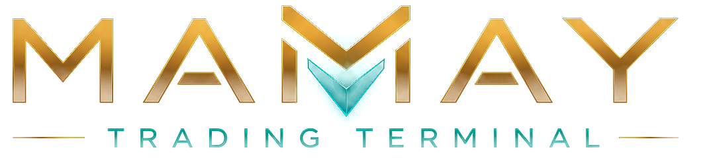

Два режима: DEMO и REAL
Переключатель всегда под рукой. В DEMO терминал торгует на бумажном счёте по живому стакану: можно проверять идеи и стратегии без риска. В REAL сделки идут на ваши биржевые счета с лимитами, потолком номинала и защитами.
MAMAY — профессиональный терминал для трейдера. Арбитраж между биржами, скринеры акций США и MOEX, волновой анализ одной кнопкой, графики с глубоким стаканом и автоматическая торговля. В одном окне и на ваших данных.
Запись экрана настоящего терминала MAMAY в демо-режиме (бумажный счёт, рыночные данные реальные).
Трейдер сегодня живёт в семи окнах: графики в одном месте, стаканы на биржах, акции США в одном сервисе, российский рынок в другом, скринеры в третьем, новости в четвёртом, расчёты в Excel, сигналы в Telegram. Пока он переключается между ними, возможность уже закрылась.
MAMAY — единый терминал, где всё работает на одних данных: сканеры находят идею, новости и волновой анализ её подтверждают, калькулятор считает чистую прибыль по реальному стакану, терминал сам открывает и закрывает сделки, а журнал объясняет результат.
Не набор разрозненных вкладок, а единая система: каждый модуль использует данные остальных.
Переключатель всегда под рукой. В DEMO терминал торгует на бумажном счёте по живому стакану: можно проверять идеи и стратегии без риска. В REAL сделки идут на ваши биржевые счета с лимитами, потолком номинала и защитами.
Три режима: между биржами (спот → перевод → продажа), фьючерс↔фьючерс и фьючерс↔спот. Включите автоматический режим, и терминал сам найдёт связку, откроет и закроет сделку.
Подключите API-ключи бирж, и MAMAY переведёт монеты и USDT/USDC с биржи на биржу по нажатию одной кнопки. Терминал сам выбирает самые выгодные и быстрые сети, а активы между биржами перераспределяются автоматически. Именно это позволяет арбитражу работать на автомате: купить на одной бирже, перегнать, продать дороже на другой.
Для криптовалют и акций Мосбиржи: свечи, профиль объёма, кластеры, лента сделок «пузырями», стакан до 200–500 уровней. Всё на единой шкале цен.
Автоматическая волновая разметка любого графика на любом таймфрейме. Один клик — и терминал расчерчивает волны, уровни и цели.
Каждая панель терминала — отдельный блок: тяните, меняйте размер, стыкуйте как вам удобно и сохраняйте свои раскладки. У каждого трейдера свой рабочий стол.
Premarket, Диапазоны, Флаги, Импульсы. Находят бумаги до открытия сессии и оценивают каждую по набору факторов.
Отдельный блок новостей из X (Twitter), Yahoo Finance и Finviz. Каждый скринер учитывает катализаторы, когда оценивает, куда пойдёт цена.
Глубокие данные Московской биржи в реальном времени: премаркет, диапазоны, флаги и волновой анализ, график с лентой и стаканом.
Лёгкая настройка уведомлений: получайте сигналы в Telegram и следите за рынком, не сидя у компьютера.
Каждая сделка хранится с прогнозом на входе и фактом на выходе. Бэктест на накопленной истории, конструктор стратегий, выгрузка в Excel.
Гамма-экспозиция дилеров, колл- и пут-стены, max pain, ожидаемый ход по IV и сканер опционного арбитража.
Это не макеты. Каждый экран ниже — снимок настоящего терминала с живыми рыночными данными.
Не нужно три подписки и три интерфейса: у каждого рынка свои скринеры, а график, стакан, новости и журнал общие.
Обычный сканер показывает разницу цен по лучшим котировкам. MAMAY прогоняет возможность через стакан, комиссии, funding, стоимость перевода и риск-движок, а потом сам проводит сделку.
Сканер видит расхождение цены на двух биржах
Берёт монету на бирже, где она дешевле
Сам выбирает самую выгодную и быструю сеть
Реализует дороже на другой бирже
Возвращает активы туда, где они нужнее
Проскальзывание растёт вместе с размером сделки: чем больше капитал, тем глубже приходится заходить в стакан. Значения иллюстративны.
На рынке есть сильные продукты, но каждый закрывает одну задачу. MAMAY собирает их в один рабочий процесс.
| MAMAY | Графические платформы | Крипто-арб боты и сканеры | Брокерские терминалы РФ | |
|---|---|---|---|---|
| Крипта, акции США и MOEX в одном окне | ||||
| Арбитраж между биржами, фьючерс↔фьючерс, фьючерс↔спот | ||||
| Перегон средств между биржами в один клик с авто-выбором сети | ||||
| Расчёт прибыли по стакану, комиссиям и funding | ||||
| Скринеры премаркета, диапазонов, флагов и импульсов | ||||
| Волновой анализ одной кнопкой на любом таймфрейме | ||||
| Новости X, Yahoo и Finviz учитываются в прогнозе скринеров | ||||
| Блочный интерфейс: ресайз, перетаскивание, свои раскладки | ||||
| Кластеры, лента-пузыри и глубокий стакан | ||||
| Режимы DEMO и REAL, алготрейдер с риск-движком | ||||
| Работает на вашем ПК, ключи не уходят в облако |
Сравнение обобщённое, по категориям продуктов. Возможности конкретных сервисов могут отличаться и меняются со временем.
Три рынка, скринеры, новости, графики, переводы и автоторговля: не нужно жонглировать пятью сервисами.
Большинство «найденных» связок после комиссий и реального проскальзывания уходят в минус. MAMAY показывает именно это.
Блочный интерфейс с ресайзом и сохранением раскладок: терминал подстраивается под трейдера, а не наоборот.
Каждая оценка идёт с причинами, каждая отклонённая сделка — с основанием. Никаких «чёрных ящиков».
Автоторговля без страховки — это казино. Поэтому защита встроена в архитектуру, а не добавлена сверху.
Обсудить на демоРубильник включается явно. Размещаются только лимитные ордера, а номинал каждого ограничен потолком.
Демо-исполнение считается по живым данным: вы видите, как сделка отработала бы на самом деле, не рискуя капиталом.
Лимиты на сделку, биржу, символ и портфель, предохранитель при серии потерь, проверка готовности биржи перед работой.
Белые списки адресов, диагностика сетей и проверка прав API-ключей до первого перевода.
Терминал работает локально на вашем компьютере. Установка без прав администратора, удаляется одним кликом.
Установщик сам загрузит Python и Node.js в папку программы и создаст ярлык. В систему ничего не ставится, права администратора не нужны.
Добавьте API-ключи бирж, токен Алор для MOEX и Telegram для уведомлений. Мастер настройки проведёт по шагам.
Скринеры находят идеи, DEMO их отрабатывает, и только потом вы решаете, переключаться ли в REAL.
MAMAY — не презентация и не прототип: это работающий терминал, который развивается итерациями и покрыт тестами. Мы открыты к диалогу с инвесторами, стратегическими партнёрами и биржами.
Нет. MAMAY — инструмент анализа и автоматизации, а не инвестиционная рекомендация и не гарантия прибыли. Торговля сопряжена с риском потери капитала. Именно поэтому терминал начинает в режиме DEMO и показывает прибыль после всех издержек.
В DEMO терминал торгует на бумажном счёте по реальному стакану и реальным ценам, ваши деньги не используются. В REAL сделки отправляются на ваши биржевые счета: реальные ордера включаются отдельным рубильником, с потолком номинала и проверкой готовности биржи.
Криптовалюты: Binance, Bybit, OKX, Gate, Bitget, MEXC. Акции США: скринеры и график, новости из X, Yahoo Finance и Finviz. Московская биржа: акции TQBR с данными Алор в реальном времени. Набор функций у рынков разный: например, арбитраж и перегоны между биржами — криптовалютный модуль.
Вы подключаете API-ключи бирж, после чего перевод монет или USDT/USDC с биржи на биржу выполняется нажатием одной кнопки. Терминал подбирает самую выгодную и быструю сеть и может сам перераспределять активы между биржами. Выводы защищены белыми списками адресов и проверками прав ключей.
Да. Все панели терминала — независимые блоки: их можно двигать, менять размер, стыковать и сохранять раскладки.
Терминал работает локально на вашем компьютере, в облако ключи не передаются. Для большинства функций достаточно ключей с правами только на чтение.
Текущая версия рассчитана на Windows 10 и 11 и открывается в браузере или как отдельное окно приложения. Облачная версия и другие платформы — в планах.
Тарифы мы объявим на запуске. Оставьте заявку — участники раннего доступа получат условия первыми.

Оставьте заявку на демонстрацию и ранний доступ. Покажем терминал на живых данных и ответим на вопросы по продукту и сотрудничеству.